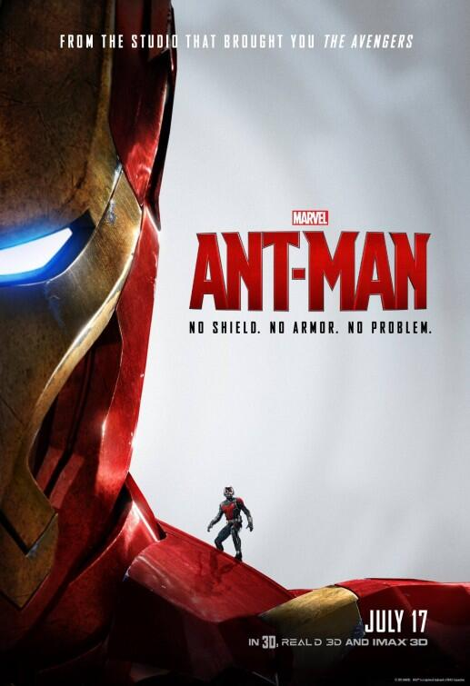

synopsis:
Inciting Event: Pym CEO David Cross reveals to Hank Pym that he has cracked Hank’s secret shrinking-particle formula and has used it design a militarized suit—much to Hank’s horror. This is the “big” Inciting Event that moves the plot, but as far as main character Scott Lang is concerned, this is all happening behind the scenes. His personal Inciting Event is the much smaller moment when he decides to take on the “airtight” new job of stealing something from “some old man’s safe.” As the scene sequence extends, that something turns out to be Hank’s Ant-Man suit. Note how even as Scott engages with the conflict, he’s still clueless about it.He doesn’t even know Cross and Pym exist, much less that he’s now a cog in their wheels. Even still, the plot moves him inexorably forward toward total immersion in the conflict.
Climax:
Cross threatens Scott’s daughter Cassie, and they engage in a full-blown battle—in miniature. This is a great use of a climactic setting. It scales the conflict down to very narrow physical confines, while also infinitely upping the stakes for the protagonist.